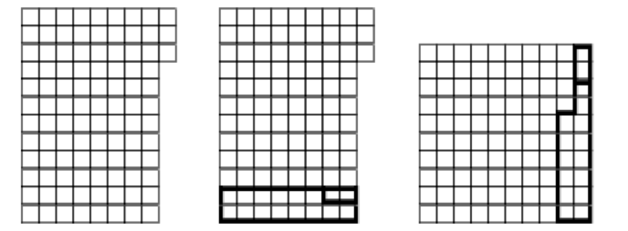

In Neverland, there are magic laws of nature, one of which reads: "A magic carpet will fly only when it has a rectangular shape." Frosty the Snowman had a magic carpet measuring $9 \times 12$. One day, the Grinch crept up and cut off a small rug of size $1 \times 8$ from this carpet. Frosty was very upset and wanted to cut off another $1 \times 4$ piece to make a rectangle of $8 \times 12$, but the Wise Owl suggested that he act differently. Instead he cut the carpet into three parts, of which a square magic carpet with a size of $10 \times 10$ could be sown with magic threads. Can you guess how the Wise Owl restructured the ruined carpet?
Think about how the magic carpet looked after the Grinch cut off a piece of it.
After the Grinch messed up the carpet, Frosty could cut off a piece of size $1 \times 4$ from this carpet and turn it into a carpet measuring $8 \times 12$. This means that after the actions of the Grinch the carpet looked as shown in Fig. 1. The Wise Owl cut this carpet as shown in Fig. 2, and sewed it as shown in Fig. 3.

See the picture on the right.